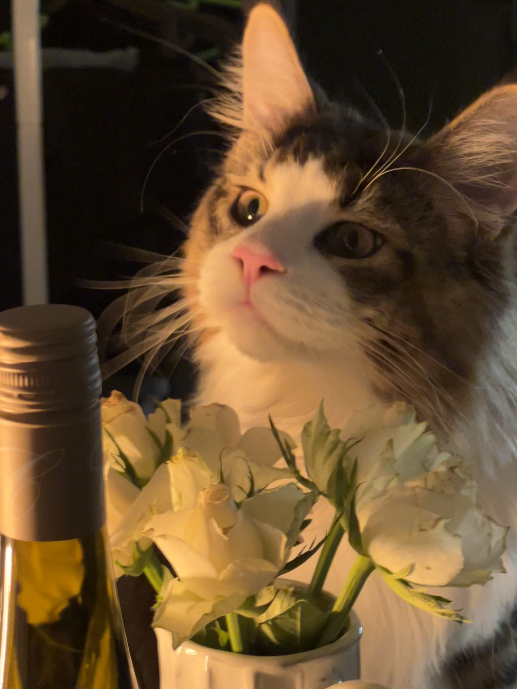

Über mich
Ich studiere Interaction Design an der HfG Offenbach und stehe kurz vor meinem Diplom. Gerade suche ich ein Praktikum, bei dem ich wirklich etwas lernen kann.
Meine größte Stärke ist nicht ein einzelnes Tool oder eine bestimmte Methode, sondern Verknüpfungen herzustellen. Ich sammle Impulse aus allen Richtungen: Bücher, Gespräche, alltägliche Beobachtungen, fachfremde Felder. Irgendwann verdichten sich diese Fragmente zu Mustern. Der Moment, in dem verstreute Punkte zu einer schlüssigen Idee zusammenfallen, ist der Teil von Gestaltung, der mich am meisten antreibt. Die Synthese. Das Emergente.
Wie ich denke
Ich bin eine Generalistin mit ausgeprägter Mustererkennung. Ich sehe Zusammenhänge zwischen Dingen, die auf den ersten Blick nichts miteinander zu tun haben, und habe gelernt, diesem Instinkt zu vertrauen. Ich eigne mir Neues schnell an, denke über Disziplinen hinweg und bringe unerwartete Referenzen in Projekte ein.
Aktuell beschäftige ich mich mit der Frage, wie KI die Denkweise von Designer:innen verändert. Nicht nur als Werkzeug, sondern als gestalterisches Material. Vibe Coding, KI-gestützte Ideenfindung, Mensch-KI-Kollaboration: Das sind für mich keine Schlagwörter, sondern meine tatsächliche Arbeitsweise.
Off-Screen
Wenn ich nicht gerade gestalte, wird meine Zeit größtenteils von meinem Maine-Coon-Vorgesetzten verwaltet: Cheng Cai (程财).

Chefkritiker. Flauschig. Unerbittlich.